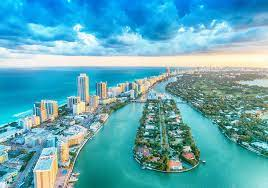

The largest city in Florida and in the southeastern United States, Jacksonville offers something for everyone. Professionals will find plenty of jobs and a booming economy; families will find top-rated schools and a number of cultural attractions; and retirees will find a number of affordable neighborhoods and reasonably priced real estate. The city is also home to Florida’s third largest seaport.
Stunning beaches, outstanding restaurants and an exciting social scene make Miami one of the liveliest places in the world to live. The city is also the fourth largest urban area in the country,attracting students, young professionals, families and retirees alike. This exceptionally diverse place to live is also home to a vibrant arts scene, with several arts districts, famous art shows, galleries and museums located throughout the city.

Everyone from retirees and families to young professionals and singles will find what they’re looking for in Orlando. Known for its many tourist attractions, including Disney World and Universal Studios, the City of Orlando is one of the most visited destinations in the country. Residents can take advantage of local discounts on attractions as well asthe many job opportunities available within the theme parks. Outside of the city, families will find plenty of other kid-friendly activities and top-rated schools.
One of the most popular places to vist in Florida is the Walt Disney World. The resort comprises four theme parks (Magic Kingdom, Epcot, Disney's Hollywood Studios, and Disney's Animal Kingdom), two water parks (Disney's Blizzard Beach and Disney's Typhoon Lagoon), 31 themed resort hotels, nine non-Disney hotels, several golf courses, a camping resort, and other entertainment venues, including the outdoor shopping center Disney Springs.